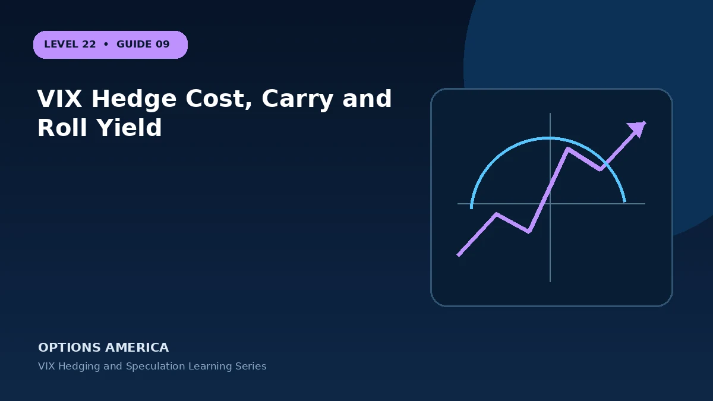

Measure repeated premium expense, futures curve effects and the cost of maintaining crisis protection.
Measure more than one outcome
Stress testing should answer how much the account can lose, when that loss can occur and whether the position can still be closed. For vix hedge cost, carry and roll yield, combine the wrong direction with a volatility shock and reduced liquidity. A useful test challenges the assumptions that make the base case attractive.
Check the changing Greeks
The Greek profile of vix strategies is conditional on price, time and volatility. Ask which sensitivity creates profit, which one finances it and which one accelerates loss. That question is more informative than describing the position as simply bullish, bearish, long volatility or hedged.
Plan execution and liquidity
Before entering vix hedge cost, carry and roll yield, inspect bid-ask spreads, quoted size, open interest and the exact settlement or exercise rules. Use limit orders and confirm each filled quantity. Slippage and partial execution can materially change a multi-leg payoff, especially when markets widen during stress.
Define management before entry
Write a response for three states: thesis working, thesis delayed and thesis invalidated. For vix hedge cost, carry and roll yield, specify whether each state calls for holding, reducing, closing or replacing exposure. This reduces the temptation to convert a planned trade into an indefinite commitment after a loss.
Start with the objective
The useful starting point for vix hedge cost, carry and roll yield is the job the position must perform. Measure repeated premium expense, futures curve effects and the cost of maintaining crisis protection. State the horizon, desired exposure, affordable cost and event being addressed. That written objective makes it possible to compare the strategy with cash, stock or a simpler option structure.
Understand the economic exposure
The central mechanism is simple but the live exposure is dynamic: A hedge can work in a crash and still reduce long-run returns if renewal and carry costs are ignored. Separate intrinsic value from extrinsic value and identify which leg controls the next dollar of risk. Include commissions, exercise or settlement mechanics and capital tied up by the position.
A practical example
Spending 0.75% each quarter costs about 3% a year before compounding when no hedge payout is realized.
This simplified example is educational and focuses on selected outcomes. Live prices also reflect time, implied volatility, skew, rates, dividends where applicable, liquidity, settlement conventions and transaction costs. Greeks and scenario values are estimates, not guarantees.
Decision checklist
Confirm the market thesis and time horizon. Calculate the full-position payoff and premium at risk. Stress price, volatility and time together. Check contract specifications and settlement. Set the maximum account-level loss, reserve capital and exit trigger. Finally, record the result after closing so the next decision is based on evidence rather than memory.
Frequently asked questions
What is the key idea behind VIX Hedge Cost, Carry and Roll Yield?
A hedge can work in a crash and still reduce long-run returns if renewal and carry costs are ignored.
Does the example guarantee a live-market result?
No. It is an educational scenario; live prices, volatility, liquidity, costs and contract terms can change the outcome.
What should be defined before entry?
The objective, size, maximum tolerated loss, review triggers, settlement or assignment plan and exit date.
Continue the VIX Hedging and Speculation cluster
Explore related guides: When to Close or Roll a VIX Hedge · VIX Hedging Strategies Guide · VIX Calendar Spread Strategy. For a structured sequence, use the free Level 22 – VIX Hedging and Speculation course.
Options and volatility products involve risk and are not suitable for every investor. This material is educational and is not investment, tax or legal advice. Verify current contract specifications with the exchange and your broker.